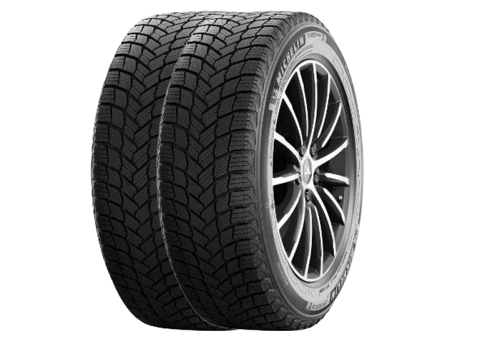
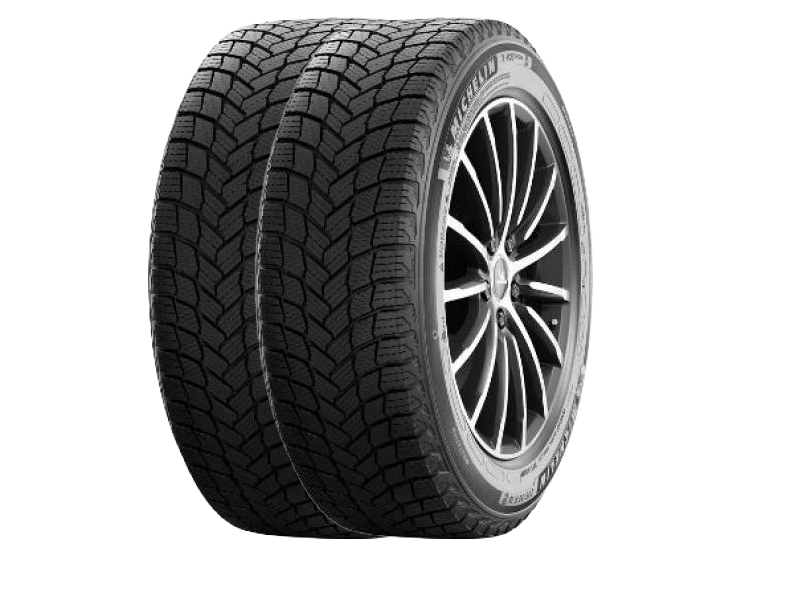
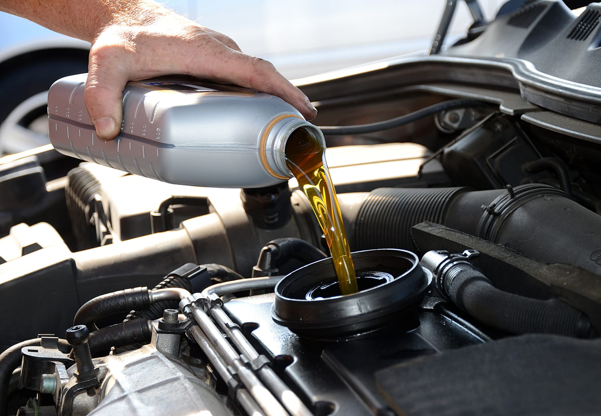

Entretien de Vos Pneus : Garantissez Votre Sécurité
Pourquoi Choisir L'Usine du Pneu pour l'Entretien de Vos Pneus ?

- Expertise Professionnelle : Nos techniciens sont des experts dans le domaine de l'entretien des pneus. Ils connaissent les spécificités de chaque type de pneu et savent comment les entretenir correctement.
- Équipement de Pointe : Nous disposons d'équipements modernes pour le montage, l'équilibrage et l'alignement des pneus. Vos pneus seront entre de bonnes mains.
- Conseils Personnalisés : Chez L'Usine du Pneu, nous prenons le temps d'écouter nos clients. Nous vous conseillerons sur les meilleures pratiques d'entretien et vous aiderons à prendre des décisions éclairées.
- Durabilité et Économies : Un entretien régulier prolonge la durée de vie de vos pneus. En évitant une usure prématurée, vous économiserez sur les coûts de remplacement.
- Garantie de Satisfaction : Nous sommes fiers de la qualité de notre service. Si vous n'êtes pas satisfait, nous ferons tout notre possible pour résoudre le problème.
- Facilité d'Accès : Nos centres sont facilement accessibles, avec des horaires flexibles pour convenir à votre emploi du temps.
Nos Services d'Entretien de Pneus
- Vérification Complète : Nos experts accueilleront vos collaborateurs au sein de nos ateliers pour un contrôle de l'état, de l'usure et de la pression de l'ensemble des pneumatiques (trains avant et arrière, ainsi que la roue de secours) de leur véhicule.
- Révision Expert Feu Vert : Disposer d'un véhicule sain et entretenu est essentiel pour la sécurité de vos collaborateurs. Notre forfait Révision Expert inclut la vidange du moteur, le remplacement des filtres, la mise à niveau des liquides et la remise à zéro du témoin de maintenance.
- Pneumatiques : Nous proposons des prestations de réparation, de remplacement et de montage de pneumatiques. Que ce soit avec ou sans rendez-vous, nos experts s'occupent de tout.
Prenez Soin de Vos Pneus avec L'Usine du Pneu
Chez L'Usine du Pneu, nous sommes déterminés à offrir le meilleur service pour garantir la sécurité et la satisfaction de nos clients. N'hésitez pas à nous rendre visite dans l'un de nos centres pour un entretien professionnel. Vos pneus vous remercieront !